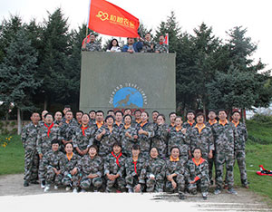

9月18日我公司前往五常种植基地拓展实践 ,领导指出……
查看更多

9月16日黑龙江和粮农业全体员工驱车前往哈尔滨市阿城区……
查看更多9月8日，我公司受邀参加首届哈尔滨英博杯食品安全在行动……
查看更多行业资讯
NEEWS CENTER
查看更多五常大米品牌保护促稻农增收
日前，五常大米在114平台电话销售战略合作研讨会在哈尔滨市联通公司召开。研讨会上，五常市市长宋泽刚向哈尔滨市联通、电信、邮政3家公司主要负责人详细介绍了五常大米的独特品质、资源和产地优势、生产销售情况和保护监管情况......
查看更多五常大米品牌保护促稻农增收
日前，记者在黑龙江省五常市市政府了解到，五常大米在全国拥有极高的知名度，同时还拥有“中国地理标志保护产品”、“农产品地理标志证明商标”和“中国名牌产品”三项桂冠后，2015年获得中国驰名商标的市县......
查看更多